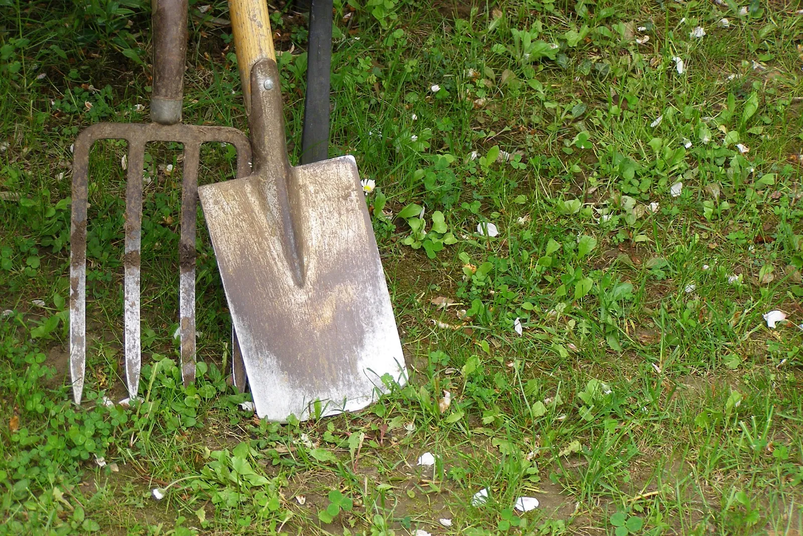

A soil test replaces guessing with knowing. Here's what it measures, why no tool should hand you fertilizer numbers without one, and how to take one. The rare piece of garden advice that saves money.

Photo: Erich Ferdinand · CC BY 2.0, via Wikimedia Commons.
What you need
A trowel or spade and a clean plastic bucket
A soil lab. In the US, your county extension office runs the test, usually for about $15. Elsewhere, look for a lab accredited for soil analysis
Ten minutes to take samples, and a couple of weeks to wait for the result
Most garden advice costs you money: buy this amendment, that fertilizer, this bag of stuff. A soil test is the rare piece that saves it. It tells you what your soil has and needs, so you stop buying things it doesn’t. A US county extension office, or an accredited soil lab anywhere else, will replace a season of guessing with a page of numbers. It is the single highest-value thing a new gardener can do, and this app will keep pointing you at it. Only a lab can know what’s in your soil.
Why can't I just guess at fertilizer?
Every “feed your garden this” recommendation that hasn’t seen your soil is a guess, and this planner will tell you so and not add to the pile:
Fertilizer recommendations without a soil test are guesswork. Say so.
If you skip this, it still grows, just less well. The planner suggests it.
How it works: Whether a soil has enough nitrogen, phosphorus and potassium (N-P-K) depends on the site, and there's no way to know it without a test.
Evidence: settled without a trial (epistemics).
Remedy
We will not invent an NPK number. A soil lab will test this soil, and the soil card shows how to find one where you garden. Until then, feed heavy feeders, do not feed root crops, and add compost.
Whether your ground is short on nitrogen, phosphorus, or potassium is specific to your site and can’t be known from a distance. Two beds in the same yard can differ. So the engine refuses to make up an N-P-K number, on purpose. A made-up number would be a lie, and the soil test is what turns the refusal into a real answer.
What does a soil test tell me?
A routine test comes back with the numbers you can’t guess:
pH: how acid or alkaline your soil is. It governs whether the nutrients already present are even available to plants.
Nutrient levels and a fertilizer recommendation: what’s short and what’s already plenty, so you add only what’s missing.
Organic matter, and often a lime or sulfur recommendation if your pH needs moving.
Two of those numbers carry their own caveat. pH matters because it decides nutrient availability:
If soil pH is too low for a plant, we say so and which way to fix it
If you skip this, it still grows, just less well. The planner suggests it.
How it works: Nutrient bioavailability is pH-dependent, so below the crop's optimum band phosphorus and molybdenum become less available; below about 5.5 the effect turns acute as aluminum and manganese dissolve fast enough to damage roots directly. Above an acid-requiring plant's range the same curve runs the other way. Iron becomes unavailable and the plant goes chlorotic.
Evidence: checked against 2 sources in the research-based literature.
At pH 5.5 or lower, the solubility of Al increases 1000-fold for every pH unit decrease. For example, at pH 5.0, Al solubility is only 0.05 ppm, but at pH 4.0, Al solubility increases to a toxic level of 51 ppm.
Plus one working note on how the sources were read.
When this applies to a garden, Milpa says: This bed's measured pH sits below what this plant wants. Near the floor that is a question of yield. Survival isn't at stake. The floor is the pH at which this plant's own source says to lime (for most vegetables, University of Maryland Extension's table). The plant doesn't die there, and the figure is an estimate. Below about 5.5 it becomes a harder problem, because aluminum and manganese dissolve and damage roots. The soil card shows how to reach a soil lab.
Remedy
Lime raises pH. Use the amount your soil lab gives: only its lime requirement test of your own soil measures how much your ground needs, so we do not give a rate. For a plant that needs acid soil and sits above its range, sulfur lowers pH; for how much, ask your lab for its sulfur recommendation, and we give no rate for that either.
Different crops want different ground, and the spread is wider than most people expect. A blueberry needs soil so acid that it would starve most vegetables, which is why it belongs in its own bed away from the main plot:
The soil pH each crop wants, measured in water, from our plant records (7 is neutral; below that is acid). Blueberry’s acid band never reaches the others’, so no single bed suits both.Source: the soil pH range in each plant’s record.
Those ranges are pH measured in water. Some labs measure pH in calcium chloride instead, and the report writes it as pH (CaCl2). That number reads lower by an amount that changes from one soil to the next, so it can’t be read against this chart, and no fixed amount turns it into a water pH:
We check a soil pH against a plant's range only when it was measured in water, the way the ranges are written. A reading in calcium chloride is kept and shown, and never converted.
Read against a range written in water pH, a pH measured another way can flag a plant that’s fine or miss one that isn’t. The planner keeps that reading and checks no plant against it.
How it works: A pH read in a calcium chloride solution is commonly 0.5 to 1.0 unit lower than the same soil read in water, by an amount that changes with the soil's type and salt content, so a range written in water pH cannot be compared with it or reached by adding a fixed number.
Evidence: checked against 11 sources in the research-based literature.
The 11 sources
raw.githubusercontent.com
Soil pHAustralasian Soil and Plant Analysis Council (ASPAC) via ANZSoilData
As with most measurements on soil, pH values vary with the procedure used.
Results are commonly from 0.5 to 1.0 pH unit lower than those obtained by Method 4A1 (e.g. Conyers and Davey 1988), although smaller differences are possible when soils contain high levels of soluble salts (naturally and/or from fertiliser additions) and/or when soil colloids exhibit variable surface charge characteristics.
The pH measured in 1 M KCl or 0.01 M CaCl 2 solution is typically lower than the pH of the same soil measured in water due to the higher concentration of H + in the resultant suspension from cation exchange phenomenon.
Soil pH drops nearly one pH unit from the very low salt condition (following heavy winter rains) to a salt content that would occur in late spring following fertilizer application
When this applies to a garden, Milpa says: This reading wasn't taken in water, or the report doesn't say how it was, and the ranges here are in water pH. Readings in calcium chloride usually run half a unit to a unit lower than in water, and the gap moves with your soil's salt, so we keep the reading without checking plants against it.
Remedy
Ask your lab for the pH in water. Many labs measure both, and some print a water figure they worked out themselves; that one counts, because it is the lab's. Enter the water pH and the plants are checked against it.
And if the test says to change your pH, how much lime or sulfur to add is a real number only because the lab measured your soil. Don’t eyeball it:
To know how much lime or sulfur to add, you need your lab's recommendation from a test of your soil. We can say which way to go, but the amount has to come from the lab.
How much lime or sulfur it takes depends on your own soil, so the amount is the lab’s to give from a test of it. The planner tells you which way your pH should move, and never an amount.
How it works: Buffering capacity, which is set by clay and organic matter, decides how much lime moves pH at all, so the same target takes very different amounts in sand and in clay.
Evidence: checked against 2 sources in the research-based literature.
The amount of lime required to increase soil pH is determined by the size of the limestone particles being used and, most importantly, the buffering capacity of the soil.
Lime requirement is also commonly determined by soil pH measurement and soil texture classification.
Plus one working note on how the sources were read.
Remedy
We will not tell you how much lime or sulfur to add, and neither should anything that has not measured your soil. If your report prints a lime or sulfur rate, it is a real one for your ground, whichever lime requirement method your lab used, so use that. If it does not, ask your lab for its lime or sulfur recommendation; for lime, that comes from a lime requirement test, usually part of a routine soil test. Which direction to go we can tell you. Lime raises pH and sulfur lowers it.
Which direction to go is free: lime raises pH, sulfur lowers it. The amount depends on how your particular soil resists the change, which is exactly what the test measures and what no chart can.
How do I take a soil test?
It takes ten minutes:
1. With a clean trowel, take a slice of soil from root depth, about 15 cm6 inches down, from several spots around the bed. One spot isn’t enough. 2. Drop them all in a clean plastic bucket and mix. Skip metal, which can skew micronutrient readings. 3. Let the sample air-dry, then send the amount your lab asks for, with their form.
Sample each distinct area separately. A vegetable bed and a lawn, or beds with very different history, are different soils and want their own tests.
What do I do while I wait for results, or if I skip it?
You don’t have to garden blind in the meantime. The interim advice, straight from the rule above, is safe: feed the heavy feeders (tomatoes, corn, squash, brassicas), and don’t feed root crops, since extra nitrogen gives you leaves at the expense of the root. Add compost, which improves almost any soil without the risk of overdoing a specific nutrient. Then let the test, when it comes, turn that general advice into a precise one. The guide to last year’s raised-bed soil covers keeping good soil good once you have it.
Further reading
Good places to read more about the technique on this page. The grade on each card comes from that card’s own sources.